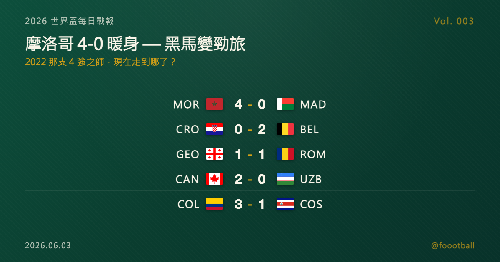

世界盃倒數：摩洛哥 4-0 暖身，而 2022 那支 4 強之師，現在走到哪了？

2026 世界盃每日戰報 Vol. 003
§1 即時比分戰報（6/1–6/2 國際熱身賽窗口）
| 賽事 | 比分 | 場館 | 焦點 |
|---|---|---|---|
| 🇲🇦 摩洛哥 — 🇲🇬 馬達加斯加 | 4 - 0 | 拉巴特 Prince Moulay Abdellah | 薩伊巴里 4' / 25' 兩響、拉希米 78'(P)、艾爾卡比 87' |
| 🇭🇷 克羅埃西亞 — 🇧🇪 比利時 | 0 - 2 | Rijeka Rujevica | 蒂勒曼斯 38'、盧卡庫 90+6' 補時鎖勝 |
| 🏴 威爾斯 — 🇬🇭 迦納 | 1 - 1 | Cardiff Cardiff City | 伊倫基 66'(GHA)、科馬斯 90+3' 補時扳平 |
| 🇬🇪 喬治亞 — 🇷🇴 羅馬尼亞 | 1 - 1 | Tbilisi Meskhi | 克維利泰亞 46'、蒙特亞努 55';哈吉回歸執教首戰 |
| 🇨🇦 加拿大 — 🇺🇿 烏茲別克 | 2 - 0 | Edmonton Commonwealth | 奧索里奧 58'、尼爾森 90+1' |
| 🇨🇴 哥倫比亞 — 🇨🇷 哥斯大黎加 | 3 - 1 | Bogotá El Campín | 桑切斯 17'、迪亞斯 23'、蘇亞雷斯破門;索托(CRC) |
6 場全屬會內賽前的國際熱身賽，已晉級的強隊各自試陣、未晉級的球隊收尾賽季。當日最大比分是摩洛哥主場 4-0 馬達加斯加 — 而這支球隊背後的故事，正是今天 §4 的主菜。
§2 排行榜：FIFA 排名亮點 — 摩洛哥世界第 8，非洲與阿拉伯世界最高
接下來進入「首戰前 24 小時可因傷替補」的微調期。
§3 賽事摘要
🇲🇦 摩洛哥 4 - 0 馬達加斯加：薩伊巴里（Ismaël Saibari）上半場 4 分鐘、25 分鐘梅開二度奠定基礎，拉希米（Soufiane Rahimi）78 分鐘點球加碼，艾爾卡比（Ayoub El Kaabi）87 分鐘補進第四球。摩洛哥主場攻勢全程壓制，是當日最具說服力的一場勝利（詳見 §4）。
🇭🇷 克羅埃西亞 0 - 2 比利時：蒂勒曼斯（Youri Tielemans）38 分鐘先拔頭籌，盧卡庫（Romelu Lukaku）補時第 90+6 分鐘鎖定勝局。比利時客場展現效率，克羅埃西亞主場交白卷。
🏴 威爾斯 1 - 1 迦納：迦納伊倫基（Caleb Yirenkyi）66 分鐘破門先馳得點，威爾斯靠科馬斯（Lewis Koumas）補時第 90+3 分鐘扳平，這也是他的國家隊處子球。
🇬🇪 喬治亞 1 - 1 羅馬尼亞：此役最大看點是羅馬尼亞名宿哈吉（Gheorghe Hagi）回歸執教的首戰。克維利泰亞（Giorgi Kvilitaia）下半場開賽即進球，蒙特亞努（Louis Munteanu）55 分鐘為羅馬尼亞扳平，雙方互交一球收場。
🇨🇦 加拿大 2 - 0 烏茲別克：地主加拿大下半場發力，奧索里奧（Jonathan Osorio）58 分鐘破僵，尼爾森（Jayden Nelson）補時第 90+1 分鐘錦上添花，完封作客的烏茲別克。
🇨🇴 哥倫比亞 3 - 1 哥斯大黎加：哥倫比亞主場火力全開，桑切斯（Davinson Sánchez）頭槌破門、迪亞斯（Luis Díaz）再下一城，蘇亞雷斯（Luis Suárez，哥倫比亞前鋒）下半場補刀；哥斯大黎加僅靠索托（Andrey Soto）扳回一球。
§4 焦點觀察：摩洛哥追夢人 — 2022 那支 4 強之師，現在走到哪了？
昨晚摩洛哥在拉巴特 4-0 大勝馬達加斯加，比分看起來只是一場再普通不過的熱身賽。但如果你還記得三年半前那個冬天，你就會知道，這支球隊的每一場比賽都不再是「普通」。
那個改變一切的冬天
2022 年卡達世界盃，摩洛哥做了一件在那之前沒有任何非洲球隊、沒有任何阿拉伯世界球隊做到的事 — 闖進世界盃 4 強。
那不是僥倖。小組賽他們壓過比利時（2-0）、力克加拿大、逼平克羅埃西亞，以小組第一晉級。16 強 PK 大戰淘汰西班牙，哈基米（Achraf Hakimi）一記吊射式的「勺子」點球（Panenka）把球輕輕送進網窩，把這支「美洲與歐洲以外的球隊」送進 8 強。8 強，恩內斯里（Youssef En-Nesyri）一記高高躍起的頭槌 1-0 擊敗葡萄牙，把 C 羅那一屆的世界盃夢直接終結在場邊。
直到 4 強遇上最終冠軍法國，摩洛哥才以 0-2 止步，季軍戰再 1-2 不敵克羅埃西亞，最終排名第 4。
但名次從來不是重點。重點是那一個月裡，全世界第一次認真地問：一支非洲球隊，真的可以走到最後嗎？
帶隊的是瓦利德·雷格拉吉（Walid Regragui）— 一個在世界盃開踢前不到三個月才臨危受命的本土教練。他和隊長薩伊斯（Romain Saïss）、右後衛哈基米等人，成了那個冬天整個阿拉伯世界的集體記憶。
然後，故事拐了個彎
如果這篇文章寫在一年前，標題大概會是「雷格拉吉與他的黃金一代，瞄準 2026」。
但足球不會照劇本走。
2025 年，摩洛哥以地主身分主辦非洲國家盃（AFCON）。主場、滿座、全國的期待 — 他們一路殺進決賽，在首都拉巴特，面對塞內加爾。
然後，是一場至今沒有真正落幕的決賽。
那場決賽在爭議中收場 — 補時階段一次判罰、塞內加爾球員一度離場抗議，賽會最初將冠軍判給塞內加爾。摩洛哥，在自己的土地上、自己的球迷面前，看著獎盃旁落。
2026 年 3 月 5 日，雷格拉吉辭去摩洛哥國家隊總教練一職。那個帶他們寫下 2022 歷史的人，沒能撐到 2026 世界盃。
而就在他離開後不到兩週，劇情再次翻轉：3 月 17 日，非洲足總（CAF）上訴委員會裁定塞內加爾因球員中途離場屬「棄賽」，將決賽正式記錄改為摩洛哥 3-0 勝；外界普遍解讀為摩洛哥被改列冠軍，但塞內加爾隨即在 3 月 25 日向國際體育仲裁法庭（CAS）提出上訴 — 直到今天，這座冠軍的最終歸屬仍懸而未決。
於是摩洛哥成了一支處境奇特的球隊：上一座大賽獎盃是在會議室裡翻回來的、對手還在為這個結果上訴，而帶他們打進那場決賽的教練，早已不在。帶著這樣一個沒有答案的冬天，他們走向 2026 世界盃。
接手的是穆罕默德·瓦比（Mohamed Ouahbi）— 一個此前帶領摩洛哥 U20 在 2025 年勇奪 U20 世界盃冠軍的少帥。這是他生涯第一份國家隊一隊的工作。一個剛在青年級別封王的教練，接下一支被全世界期待「複製 2022 奇蹟」的成年隊，而且距離世界盃只剩三個多月。
4-0 背後，是一支正在換血的球隊
回到昨晚那場 4-0。
進球的人很說明問題。梅開二度的薩伊巴里、點球建功的拉希米、補射的艾爾卡比 — 這些名字在 2022 那支 4 強之師裡，要嘛是邊緣人，要嘛根本還沒入選。瓦比正在用熱身賽，把一支「2022 的記憶」改寫成「2026 的陣容」。
但骨幹還在。哈基米 — 那個在 2022 罰進關鍵點球的右後衛 — 如今是隊長、是 2025 年歐冠冠軍（巴黎聖日耳曼）的主力、是非洲足球先生等級的存在。前場有 2025 非洲盃金靴布拉欣·迪亞斯（Brahim Díaz，皇家馬德里），鋒線有 2022 絕殺葡萄牙的恩內斯里。世界第 8 的排名，不是空穴來風。
2026 的「死亡之組」
摩洛哥這屆被分進 C 組，同組對手：巴西、蘇格蘭、海地。
巴西。是的，就是那個巴西。
而且根據賽程，摩洛哥小組賽第一場硬仗，6 月 13 日就要和五星巴西正面對決。2022 年他們是那支「沒人看好、結果一路驚奇」的黑馬；2026 年，他們是世界第 8、是上屆 4 強、是被對手認真研究的勁旅 — 黑馬的劇本，這次演不了了。
從「沒人期待」到「人人期待」，從雷格拉吉到瓦比，從哈基米的那記勺子點球到薩伊巴里的梅開二度 — 摩洛哥這三年半，把一次驚奇變成了一種身分。
問題只剩一個：當你不再是黑馬，當帶你寫下歷史的人已經離開，當全世界都在等你證明 2022 不是偶然 —
你還追得動那個夢嗎？
6 月 13 日起，C 組開打。拉巴特昨晚的 4-0，只是序章。
@foootball | 2026 世界盃每日戰報 Vol. 003 | 2026-06-03
Tags：世界盃, 摩洛哥, Hakimi, 2026世界盃, AFCON, 足球